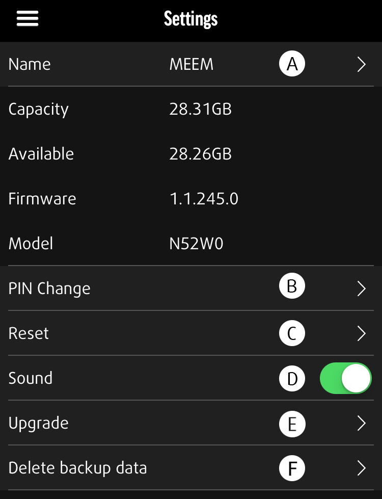

EINSTELLUNGEN

Kabel-Informationen
Verwaltung von Kabel- und In-App-Präferenzen
(A) Name: Ermöglicht Ihnen die Namensänderung Ihres MEEM-Kabels
(B) PIN-Änderung: Ermöglicht Ihnen, Ihre PIN zu ändern
(C) Zurücksetzen: Löscht alle gespeicherten Daten auf Ihrem MEEM-Kabel
(D) Ton: Ton an/aus
(E) Aktualisieren: Lässt Sie eine Firmware-Aktualisierung durchführen
Löschen (F)
In der MEEM-App gibt es zwei Möglichkeiten zum Löschen gesicherter Daten. Die erste Möglichkeit findet sich im Menü „Ihre Daten“. Beim Ansehen einer Kategorie können Sie oben „Auswählen“ antippen und eine bestimmte Anzahl an Daten innerhalb der Kategorie auswählen. Drücken Sie zum Löschen der gewählten Daten das Mülleimer-Symbol, das sich oben neben den Schaltflächen „Abbrechen“ und „Teilen“ befindet. Die ausgewählten Daten werden dauerhaft von Ihrer Sicherung gelöscht.
Die zweite Möglichkeit findet sich im Menü mit den Einstellungen. Hier können Sie die Löschen-Funktion über die Kategorie „Sicherungsdaten löschen“ aufrufen. Wählen Sie oben auf dem Bildschirm die Sicherung aus, die Sie vollständig löschen möchten. Durch Tippen auf die Löschen-Schaltfläche unten können Sie sämtliche Inhalte jeder ausgewählten Sicherung löschen. Nach Tippen der Löschen-Schaltfläche werden Sie gefragt, ob Sie die ausgewählten Daten wirklich löschen möchten. Durch Tippen auf „Okay“ werden diese Daten auf Ihrem MEEM dauerhaft gelöscht.
Benachrichtigung (G)
Unter „Benachrichtigung“ können Sie die MEEM-Benachrichtigungen ein- und ausschalten. Benachrichtigungen werden von MEEM jeweils 24 Stunden nach der letzten Sicherung des Geräts verschickt und erinnern Sie daran, Ihre Daten auf dem MEEM zu sichern. Wenn Sie keine Benachrichtigungen erhalten möchten, können Sie diese hier oder im Einstellungen- Menü auf Ihrem Gerät ausschalten.
MEEM-Netzwerk (H)
Die Schaltfläche „MEEM-Netzwerk“ erlaubt Ihnen, den MEEM-Netzwerk-Modus ein- und auszuschalten. Der Modus muss eingeschaltet sein, wenn Sie eine kabellose Verbindung zum MEEM-Netzwerk herstellen möchten. Weitere Informationen hierzu finden Sie in Abschnitt 16, MEEM-Netzwerk, und in der Bedienungsanleitung für das MEEM-Netzwerk, zu finden auf unserer Website in der Hilferubrik, ganz unten unter DOWNLOADS: https://www.meemmemory.com/help/